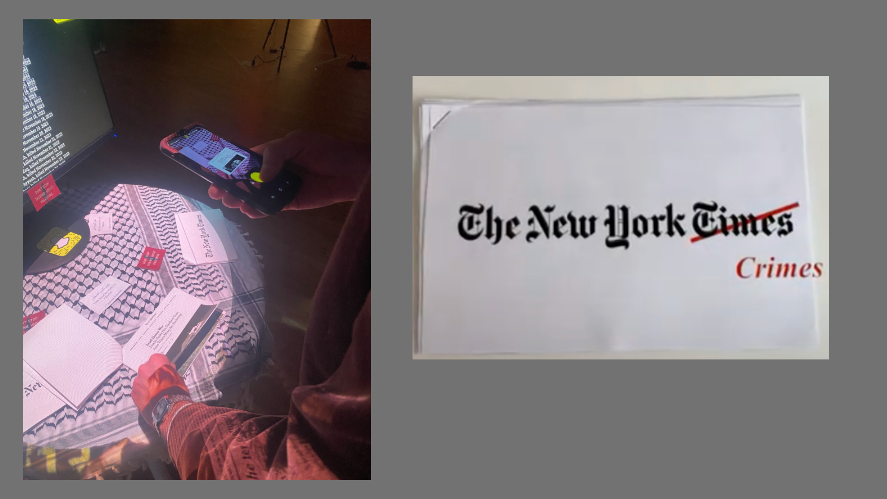

Augmented Reality · Storytelling

An interactive AR experience that visualizes media bias by overlaying factual timelines onto real news articles. Using AR projections, users compare original reports with accurate event sequences, highlighting the role of news outlets in shaping public perception.
Presented as part of an Interactive Media showcase in Brooklyn, New York.